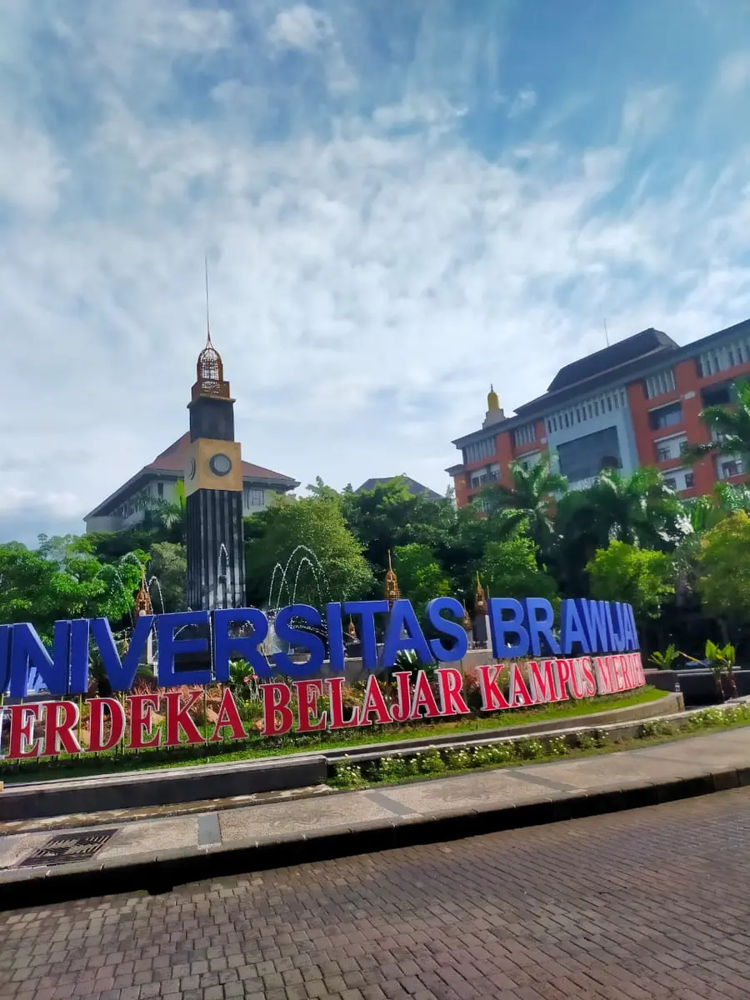

Progres skala operasi
Dari supervisi unit sekitar 1.500 ekor menuju exposure pada populasi puncak sekitar 6.000 ekor.
Field operations · livestock systems · Indonesia
Feedlot Operations Supervisor
Memimpin operasional dari lapangan—menghubungkan kesiapan ternak, feeding discipline, welfare, biosecurity, dan koordinasi tim menjadi eksekusi yang konsisten.
*Angka ±6.000 ekor adalah paparan populasi puncak, bukan klaim populasi normal harian.
Recruiter snapshot
Tiga bukti yang merangkum skala pengalaman, progres tanggung jawab, dan fondasi ilmiah.
Dari supervisi unit sekitar 1.500 ekor menuju exposure pada populasi puncak sekitar 6.000 ekor.
Terlibat pada ritme unit, monitoring ternak, feeding routine, handling, welfare, biosecurity, dan koordinasi tim.
Riset karkas Brahman Cross pada 210 sampel memperkuat cara berpikir berbasis data dan produksi.
Practical operator · scientific foundation
Operasi yang kuat dibangun dari detail yang dilakukan benar—setiap hari.
Sebagai Feedlot Operations Supervisor, saya menjaga ritme unit melalui observasi kondisi ternak, feeding discipline, kontrol area, penerapan welfare dan biosecurity, serta komunikasi tim yang jelas. Fondasi Animal Science membantu saya menghubungkan keputusan lapangan dengan konteks produksi yang lebih luas.
Responsibility earned through direct execution
Supervisor · PT Sumber Daya Multikarya · Cianjur
Menjaga stabilitas operasional pada lingkungan feedlot dengan exposure populasi puncak ±6.000 ekor melalui monitoring ternak, feeding routine, koordinasi tim, welfare, biosecurity, dan konsistensi SOP.
Supervisor · PT Sumber Daya Multikarya · Banten · ±1.500 ekor
Mengawasi pemberian pakan, monitoring ternak, sanitasi, kontrol fasilitas, handling, pencatatan, dan kepatuhan terhadap SOP serta animal welfare.
Operational Manager · Bekasi
Membangun fondasi kepemimpinan operasional melalui koordinasi aktivitas harian, alokasi sumber daya, kontrol timeline, dan kolaborasi lintas fungsi.
Student Intern · PT Sumber Daya Multikarya
Membangun fondasi feedlot melalui distribusi pakan, observasi kesehatan, sanitasi, handling ternak, dan disiplin kerja industri.
Scope tanggung jawab, ritme supervisi, logika keputusan, dan bukti lapangan—disajikan tanpa membuka data perusahaan yang sensitif.
Baca studi kasus ↗Six disciplines · one dependable operation
Ritme kerja, prioritas unit, kesiapan area, dan konsistensi SOP dari awal hingga akhir shift.
Stabilitas unitDelivery discipline, alokasi, observasi kualitas pakan, dan respons terhadap kondisi konsumsi.
Konsistensi konsumsiIndikator kesehatan, perilaku, kondisi fisik, dan kebutuhan tindak lanjut yang terstruktur.
Deteksi diniLow-stress handling, perlakuan humanis, kebersihan, dan alur ternak yang aman.
Responsible handlingMovement control, kebersihan area, pencegahan risiko penyakit, dan integritas lingkungan kerja.
Kontrol risikoHandover, pembagian kerja, eskalasi, dan akuntabilitas yang jelas antar-shift.
Kejelasan eksekusiWork documented where it happens
Dokumentasi ringkas yang menunjukkan fasilitas, keterlibatan langsung, grading, dan kondisi ternak.
Kehadiran langsung dalam rutinitas ternak, observasi kondisi, safety, dan disiplin kerja lapangan.
Konteks fasilitas, kebersihan area, alur ternak, dan kesiapan unit.
Assessment dan klasifikasi kondisi untuk mendukung keputusan operasional.
Kondisi ternak sebagai hasil dari disiplin feeding, care, monitoring, dan readiness.
Fragmen singkat yang memperlihatkan keterlibatan langsung dan pendekatan tenang dalam handling ternak.

UNIVERSITAS BRAWIJAYA · 2019—2023Science behind field decisions
Animal Science · manajemen peternakan · produksi sapi potong · kesehatan ternak.
Analisis daily weight gain, slaughter weight, carcass weight, persentase karkas, dan Income Over Feed Cost pada 210 sampel.
Professional contact
Terbuka untuk rekrutmen dan diskusi profesional yang relevan dengan feedlot operations, livestock supervision, animal welfare, biosecurity, atau pengembangan industri peternakan.